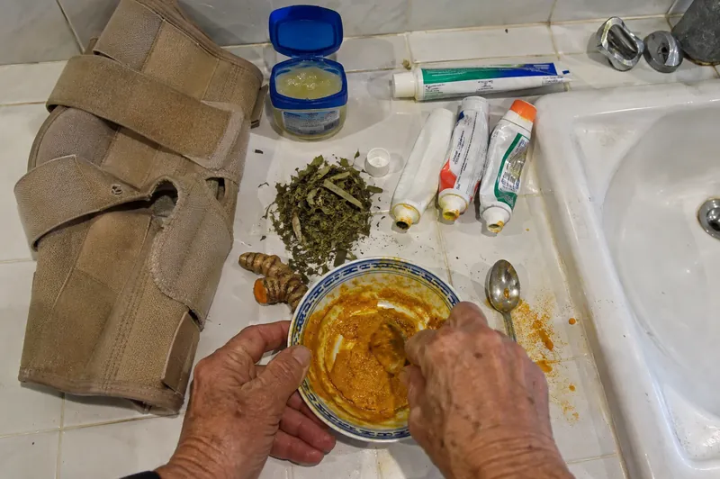
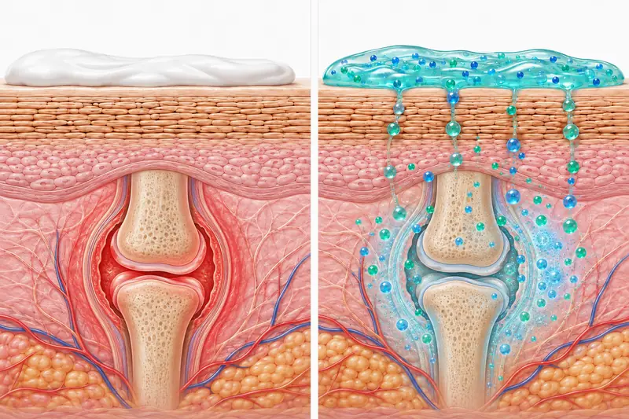
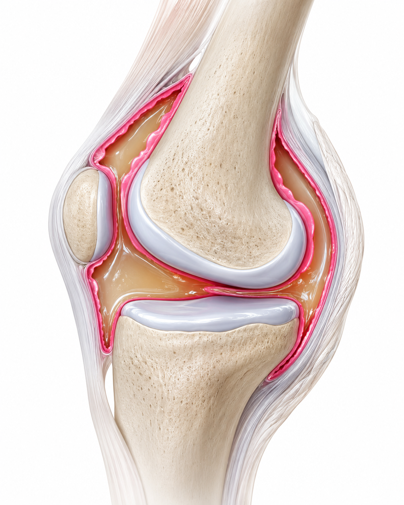

Ortopeden sa åt mig att hyra rullstol till min dotters bröllop. Elva veckor senare gick jag med henne uppför kyrkgången — och det enda som förändrats i min vardag var ett redskap med fem kulor.
Jag äter blodtrycksmedicin, så antiinflammatoriskt är uteslutet. Och när jag äntligen förstod vad som skulle göras stötte jag på ett problem ingen hade varnat mig för: jag hade inte längre kraft i händerna att göra det.
Jag är 64 år och var brevbärare i 38 av dem.
Över 130 000 kilometer till fots — tre varv runt jorden, med väskan alltid på höger axel.
Knäna skickade räkningen. Vid 60 tog jag trapporna i sidled, ett steg i taget, med båda händerna på ledstången.
I mars ringde min dotter och sa att hon skulle gifta sig i september.
Jag grät i telefonen. Sedan lade jag på och gjorde det enda räknestycke som betydde något för mig: kyrkgången i den kyrkan är ungefär fyrtio meter.
På den tiden kom jag inte tvärs över mataffären utan att stanna två gånger.
Jag bokade tid hos ortopeden veckan därpå. Tog med röntgenbilden och en enda fråga: vad går att göra till september.
Han tittade på bilden, tittade på min journal och sa:
« Med ditt blodtryck är antiinflammatoriskt i längden uteslutet. Då återstår en spruta, som inte håller dig ett halvår. Ärligt talat? Hyr en rullstol till dagen. Du går in med henne och använder stolen resten av tiden. »
Jag har ätit losartan i nio år. Jag visste redan att antiinflammatoriskt och högt blodtryck inte går ihop — min husläkare upprepar det vid varje besök.
Det jag inte var beredd på var att höra ordet rullstol.
Jag tänker inte komma in i rullstol på min dotters bröllop.
Jag sa det högt, där på mottagningen. Han ryckte på axlarna och sa att jag var envis.
Det var jag. Och jag hade elva veckor.
De första sex veckorna vann jag inte en enda meter
Jag köpte gurkmejakapslar. Kollagenkapslar. Ingefärste varje morgon, sådant som min mor brukade koka.
Jag köpte tre krämer på apoteket — den som värmer, den som kyler, den som luktar kamfer på tre meters håll. Det pirrade i tjugo minuter och sedan var värken tillbaka på exakt samma ställe.
Jag köpte knästöd. Jag köpte värmekudde.
Jag räknade ihop alltihop efteråt, av ren nyfikenhet: nästan 2 000 kronor på sex veckor, besöket inräknat. Utöver två sjukgymnastbesök à 550 kronor som jag hoppade av på grund av priset.
Sex veckor. Ingenting.
Fem kvar, och jag hade börjat förlika mig med rullstolen, när jag berättade alltihop för min dotter över en söndagsmiddag.
Hon är apotekare. Hon lyssnade utan att avbryta, hämtade en servett och en penna, och ställde en fråga jag aldrig stannat upp inför under 64 år:
« Pappa, när du sväljer en gurkmejakapsel — vilken väg tar den innan den når knät? »
Mun. Magsäck. Lever. Blodomlopp. Hela kroppen.
« Och hur mycket tror du blir kvar till knät? »
« Pappa, de här växterna fungerar.
Du sväljer dem. »
Hon ritade upp vägarna jag redan provat på servetten. Och var var och en av dem lämnade mig i sticket.
Jag satt och tittade på den servetten en bra stund. Fem veckor kvar, och jag hade just fått veta att de sex föregående aldrig haft en chans.
Sedan berättade hon det som vände upp och ner på mig

Gurkmeja har funnits i ayurvedisk och kinesisk medicin i över fyra tusen år. Ingefära är en grundpelare i japansk kampo. Ginseng har vördats i Korea i två tusen år. Indiskt rökelseharts har använts mot ledvärk sedan innan det fanns apotek.
De här växterna överlevde inte fyrtio århundraden av en slump.
Och modern forskning har redan bekräftat varför: deras ämnen verkar på precis samma enzymvägar som apotekets antiinflammatoriska angriper. Curcumin hämmar COX-2. Gingerol dämpar samma enzymer som NSAID. Boswelliasyrorna hämmar 5-LOX.
Så varför gjorde mina kapslar ingenting?
Fyra tusen år med rätt växter.
Alltid genom fel dörr.
Te, pulver, kapsel, avkok. Varenda tradition på jorden gav de här växterna genom munnen, för det var den enda vägen som fanns.
Utom en tradition, som gjorde tvärtom.
I Japan löste de det på ett annat sätt

Medan Indien och Kina arbetade med växterna utvecklade Japan något annat: shiatsu — ordagrant "tryck med fingrarna".
Shiatsuterapeuter har i århundraden arbetat med rytmiskt tryck på bestämda punkter, helt utan kräm. Bara trycket, applicerat på ett precist och upprepat sätt.
Min dotter förklarade varför det spelar roll. Fast och upprepat tryck gör tre saker med huden som enkel insmörjning inte gör: det värmer vävnaden, ökar det lokala flödet, och öppnar vägen för det som ligger på ytan att ta sig ner.
Då sa jag det mest självklara i världen:
« Då är det bara att smörja på krämen och massera hårt. »
Hon tittade på mina händer och sa ingenting på några sekunder.
Sedan sa hon:
« Pappa, jag såg dig försöka öppna syltburken i julas. Och ryggen — klarar du av att pressa hårt mot din egen ländrygg i trettio sekunder? »
Det klarade jag inte.
Trettioåtta år med väskan på axeln tog kål på min högra axel och på händerna på köpet. Jag hade äntligen förstått vad som skulle göras — och hade inte kraft i händerna att göra det.
Då visade hon mig redskapet
Hon tog fram telefonen och visade mig något jag aldrig sett: en roller — ett redskap med fem metallkulor i änden som snurrar åt alla håll, med gelen inuti.
Den heter Kinzeno.

Man smörjer inte med handen. Man rullar. Armens tyngd skapar trycket, och de fem kulorna gör jobbet som fingrarna skulle ha gjort — utan att kräva någon greppstyrka alls.
Och det finns en detalj som bara den med dåliga händer förstår: gelen kommer ut genom kulorna, så mina fingrar rör den inte ens. Jag behöver inte breda ut, inte gnida, inte tvätta händerna efteråt. Sätter an och rullar.
Och eftersom kulorna snurrar 360 grader når den ställen min hand inte kommit åt på åratal: ländryggen, skulderbladet, baksidan av knät.
Hon förklarade också varför hon valde just den:
- Den innehåller inga läkemedel, så den skulle inte krocka med min losartan
- Huvudingredienserna har publicerad forskning bakom sig — arnika jämförd med ibuprofengel vid handvärk, MSM i en klinisk studie på knän, boswellia i en dubbelblind placebokontrollerad studie
- Det var redan över 30 000 personer som använde den
« Det här är inget internetlöfte, pappa. Det är publicerat. »
Det var den första punkten som avgjorde för mig. Nio år på blodtrycksmedicin har lärt mig att alltid ställa samma fråga innan jag stoppar i mig något: kommer det här att krocka med det jag redan tar?
För första gången var svaret nej. För den går inte ut i blodet — den stannar där man lägger den.
Jag beställde samma eftermiddag. Den kom efter fyra dagar — och när jag öppnade kartongen var det exakt fem veckor kvar till bröllopet.
Vad som finns i gelen
Över trettio naturliga beståndsdelar, inte ett enda läkemedel. Det här är de fyra som hon insisterade på att visa mig i listan innan jag beställde:
Tillsammans med dem kommer ginseng, moringa, arnika, mannitol, allantoin, mentol, E-vitamin, B-komplex och över tjugo andra naturliga ämnen.
De fem veckorna som var kvar
Vecka 1. Det första jag kände var kylan från metallkulorna, som är något annat än kylan från mentol — den kommer från själva stålet som rullar mot huden. I övrigt nästan ingenting. Det var veckan jag tvivlade som mest.
Vecka 2. Jag slutade vakna på nätterna. Det var inte så att värken försvann — den slutade väcka mig. Jag märkte det för att min fru påpekade att jag sovit hela natten.
Vecka 3. Jag gick nerför trappan hemma med blicken framåt i stället för på fötterna. Jag gjorde det utan att tänka, och stannade sedan på nedersta steget och insåg vad som just hänt.
Vecka 4. Jag gick från parkeringen till butiken för att prova kostymen, utan att stanna på vägen. Det är ungefär hundrafemtio meter.
Vecka 5. Jag övade brudvalsen i vardagsrummet med min dotter, två gånger, hela låten igenom.
På bröllopsdagen körde jag rollern på morgonen, innan kostymen åkte på.
Jag gick alla fyrtio meterna av kyrkgången med henne under armen. Utan att stanna, utan käpp, utan någon stol.
Jag dansade hela brudvalsen. Jag stod upp och tog emot gratulationer till nästan midnatt.
Jag ska inte påstå att det inte gjorde ont dagen därpå — det gjorde det, rejält. Men jag hade exakt elva veckor och jag använde varenda en.
Ortopeden fick höra det av sin receptionist, som bor granne med min syster. På återbesöket frågade han vad jag hade gjort.
Jag berättade. Han skrev upp namnet på en lapp.
Så gör jag
Två till fyra gånger om dagen. Jag kör den på morgonen och före sänggåendet — kvällens är den jag inte hoppar över.
Och en sak som jag först märkte på bröllopsdagen: den fläckade inte kostymen och ingen kände någon salvlukt om mig. Med den där kamferkrämen hade hela kyrkan vetat om det.
Jag använder den på båda knäna och på ländryggen — som är stället jag aldrig kommit åt med handen. Den fungerar också på axlar, nacke, händer, handleder, höfter och vader.
Det var inte bara jag
Margareta L., 63 år
« När mina händer började låsa sig var det inte bara värk — det var mitt yrke som höll på att försvinna. Jag hade redan gått från tolv elever till fyra. Detaljen som avgjorde för mig var just den: jag hade inte kraft att massera mina egna fingrar, och med rollern behöver jag inte. Kör den över händer och handleder före första lektionen. I vecka fem spelade jag Nocturne i Ess-dur rakt igenom, utan att stanna, för första gången på nästan två år. »
Verifierat köp

Jan-Olof B., 70 år
« Fyrtio år bakom ratten förstörde min ländrygg, och vaderna krampade nästan varje natt. Problemet är att ländryggen är precis det stället jag inte når — min fru fick smörja åt mig, och hon har artros hon också. Med rollern kommer jag åt själv. I andra veckan fick jag min första hela natt. Nu sover hon i vår säng igen. »
Verifierat köp

Therese A., 57 år
« Fyra stjärnor för att jag väntade mig ett resultat redan första dagen och inte fick något. Jag kände kylan från kulorna, tyckte det var skönt och inget mer. Det jag gjorde fel var att rulla för fort, som när man tar deodorant. Jag började göra det långsamt, envisas med punkten som gör ont, och det blev en annan sak. Jag står på benen tolv timmar och mina fötter i slutet av passet var rena plågan. Nu kör jag hem utan att ta av mig skorna på vägen. En varning: långsamt, det är ingen deodorant. »
Verifierat köp
60 dagars garanti
Om du inte märker någon skillnad — oavsett skäl, eller helt utan skäl — räcker ett mejl och pengarna kommer tillbaka. Två hela månader att testa, vilket är betydligt mer än de fem veckor jag hade.
Du bestämmer dig inte för att köpa.
Du bestämmer dig för att testa.
Vad folk frågar mig
Apotekssalva är känsla: mentol i ytan som är borta på tjugo minuter, utbredd med handen. Här är det två skillnader samtidigt — vad som finns i gelen, och trycket från de fem kulorna som bearbetar punkten medan de levererar. Att breda ut är inte samma sak som att bearbeta.
Nej, och det var precis därför min dotter rekommenderade den och inte en vanlig kräm. Armens tyngd skapar redan trycket och kulorna snurrar av sig själva — det kräver ingen greppstyrka. Det var det som gjorde att jag kunde använda den med de händer jag har i dag.
Gelen innehåller inga läkemedel och verkar lokalt, utan att i någon nämnvärd grad gå ut i blodet. Det var därför jag kunde använda den medan jag äter losartan. Har du en specifik fundering, prata med din läkare — och smörj inte på skadad hud.
Kylan kommer direkt. Men lindringen första dagen är inte samma sak som resultatet. För min del började det som betydde något i andra och tredje veckan. Och rulla långsamt, envisas med punkten — för fort är det vanligaste felet bland dem jag känner som använder den.
Nej. Bara via den officiella sidan.
Kulorna innehåller neodymmagneter, så den som har pacemaker, defibrillator, cochleaimplantat eller insulinpump bör prata med läkaren som ansvarar för apparaten innan användning. Det är den enda verkliga begränsningen med redskapet.
Jag hade elva veckor och ett skäl som inte gick att skjuta upp.
Du har förmodligen inget bröllop inbokat. Men du har något som tyst har fallit bort från din lista utan att du bestämt någonting — trappan som blev ett problem, utflykten du tackar nej till, resan som alltid blir nästa år.
Tänk dig att kliva ur sängen och bara gå, utan att först samla dig.
Att gå nerför trappan med blicken framåt, inte på fötterna.
Att komma åt din egen ländrygg utan att be någon om hjälp.
Att sova natten igenom och din fru påpekar på morgonen att du inte rörde dig.
Jag brände nästan 2 000 kronor på sex veckor på att köpa rätt sak genom fel dörr — och i slutet av de sex veckorna hade jag ingenting kvar. Burkarna tog slut, knästödet blev liggande i lådan, pengarna var borta.
Redskapet köpte jag en gång, i maj. Det är fortfarande samma. Jag fyller bara på med gel.
Om du har ätit gurkmejakapslar i månader utan att märka någon skillnad är det inte du. Det är vägen — och trycket som saknades.
Det som saknades var någon som levererade dem på rätt ställe.